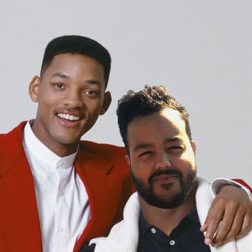
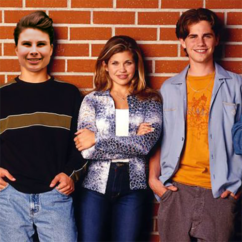

Henry
After wrapping the show Friends Courtney Cox married Henry. They moved to London in a loft that is an exact replica of the Friends set. He spends his days on the roof top garden making his living as an heirloom tomato farmer. When he’s not farming he cruises around the narrow English streets in his Tesla Model S.
Spencer

Spencer lives in a seaside apartment in Bali with his wife 90’s super model Kate Moss. He works hard every day as a pumpkin picker, selecting the worlds most elegant gourds. He is a real tase maker in the world of squashes. Most day you can see him heading down the road jumped up on the back of his shopping cart full of pumpkins.
Stephanie
Stehanie lives in a lookout tower in Kansas with the view blocked by the only trees in the state. Professionally she is a pigeon groomer which turns out to be rather lucrative. These days she mostly gets around by motorcycle sidecar and she’s married to a person you swear you’ve met before, but just can’t quite place.